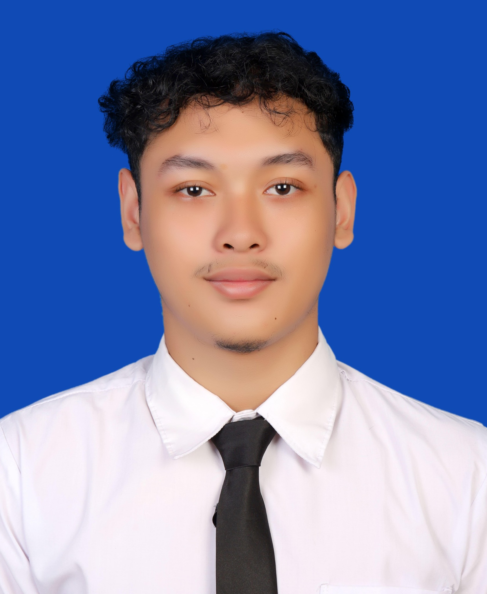

Universitas Gadjah Mada
D4 Teknologi Rekayasa Elektro · Sekolah Vokasi
Menempuh pendidikan tinggi dengan fokus pada pengembangan kompetensi di bidang rekayasa elektro.
PERSONAL PORTFOLIO
Mahasiswa D4 Teknologi Rekayasa Elektro di Universitas Gadjah Mada. Tertarik pada teknologi, pengembangan diri, kepemimpinan, dan kegiatan sosial.

01 — ABOUT ME
Rasa ingin tahu adalah awal dari setiap proses belajar.
Saya adalah pribadi yang memiliki rasa ingin tahu tinggi terhadap hal-hal baru, khususnya yang berkaitan dengan pengembangan kemampuan diri. Saya senang terlibat dalam organisasi, kegiatan sosial, dan aktivitas yang memberi kesempatan untuk belajar serta berkolaborasi.
Saya berusaha menjadi pribadi yang disiplin, jujur, bertanggung jawab, dan mampu memecahkan masalah. Bagi saya, pengalaman adalah ruang untuk terus berkembang.
“Tidak ada yang namanya hari kemarin, yang ada hanyalah hari ini dan hari esok. Teruslah melangkah, jadikan masa lalu sebagai evaluasi bukan perangkap semu yang membuatmu tak bisa melaju.”
02 — EDUCATION
D4 Teknologi Rekayasa Elektro · Sekolah Vokasi
Menempuh pendidikan tinggi dengan fokus pada pengembangan kompetensi di bidang rekayasa elektro.
Sekolah Menengah Atas
Mengembangkan dasar akademik, kemampuan berpikir analitis, serta pengalaman organisasi dan kepemimpinan.
03 — SKILLS & INTERESTS
04 — ORGANIZATION & EXPERIENCE
Beberapa organisasi dan kegiatan yang menjadi bagian dari perjalanan saya.
Anggota Departemen Sosial Masyarakat, Divisi Rehabilitasi Sosial dan Kesehatan (Rekes).
Bagian dari divisi acara; terlibat dalam penyusunan rundown, konsep acara, dan kebutuhan teknis kegiatan.
Tenaga pengajar dan anggota divisi perlengkapan, membantu edukasi anak-anak mengenai pengetahuan umum, lingkungan, dan etika.
Anggota yang terlibat dalam kegiatan penyaluran zakat, bantuan, dan kegiatan sosial-keagamaan.
Anggota Unit Kegiatan Mahasiswa Catur Universitas Gadjah Mada.
Ketua kelas sekaligus pelaksana kegiatan Action Plan Gugus Soehardi Tjahjono 2 di Gejayan, Sleman.
Ketua divisi pelatihan; mengoordinasikan pelatihan rutin dan mendukung persiapan kegiatan organisasi.
Peserta forum penguatan karakter, kepemimpinan, dan jejaring siswa.
05 — ACHIEVEMENTS
Bidang Fisika · Peringkat 1 OSN-K
Festival Kompetisi Nasional Bidang Fisika — PT Bee Nusantara
Bidang Fisika
Giat Prestasi — Kwartir Cabang Jombang
Kursus Bahasa Inggris Mr. Bob, Kampung Inggris Pare
PERCASI Kabupaten Jombang
06 — CONTACT
Terbuka untuk bertukar ide, belajar bersama, dan kesempatan kolaborasi.